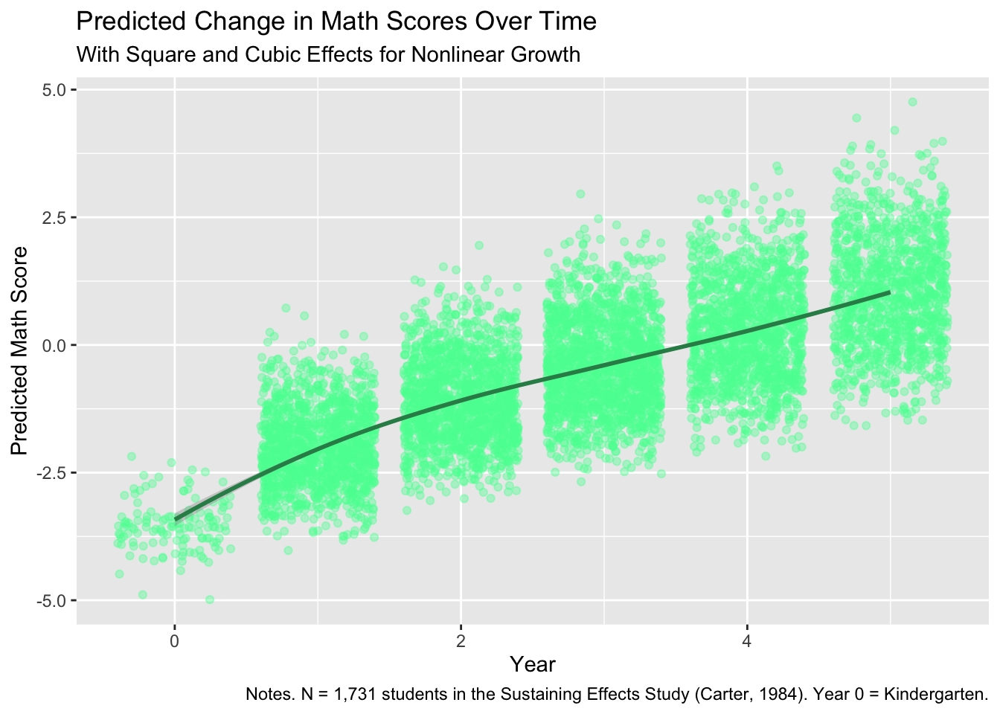
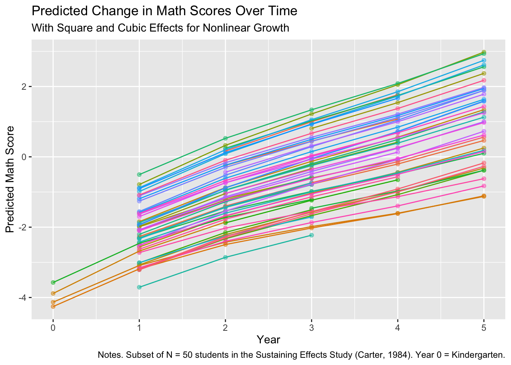

Loading required package: Matrix
Attaching package: 'Matrix'The following objects are masked from 'package:tidyr':
expand, pack, unpackData for this chapter: egmerged.dta
Copy egmerged.dta into this project folder before rendering.
This week, we continue with the data from the US Sustaining Effects Study (Carter 1984), which attempted to assess the sustaining impacts of compensatory schooling for students over time. We will dig into nonlinear growth patterns and heterogeneous variance models, two advanced topics in growth modeling.
Loading required package: Matrix
Attaching package: 'Matrix'The following objects are masked from 'package:tidyr':
expand, pack, unpackRows: 7,230
Columns: 12
$ schoolid <dbl> 3430, 3610, 2180, 3040, 3221, 3360, 4450, 4390, 3610, 3610, 3…
$ childid <dbl> 289376791, 288278731, 292789461, 275898121, 300246721, 244834…
$ year <dbl> 1, 1, 1, 1, 1, 1, 1, 1, 1, 1, 1, 1, 1, 1, 1, 1, 1, 1, 1, 1, 1…
$ grade <dbl> 0, 0, 0, 0, 0, 0, 0, 0, 0, 0, 0, 0, 0, 0, 0, 0, 0, 0, 0, 0, 0…
$ math <dbl> -3.887, -4.055, -3.525, -3.592, -3.525, -3.068, -2.596, -3.72…
$ retained <dbl> 0, 0, 0, 0, 0, 0, 0, 0, 0, 0, 0, 0, 0, 0, 0, 0, 0, 0, 0, 0, 0…
$ female <dbl> 1, 1, 0, 0, 0, 0, 0, 0, 0, 0, 0, 1, 1, 0, 0, 0, 1, 0, 1, 0, 1…
$ black <dbl> 1, 1, 1, 1, 1, 1, 1, 1, 1, 1, 1, 0, 1, 1, 1, 1, 1, 1, 1, 1, 1…
$ hispanic <dbl> 0, 0, 0, 0, 0, 0, 0, 0, 0, 0, 0, 1, 0, 0, 0, 0, 0, 0, 0, 0, 0…
$ size <dbl> 641, 1062, 777, 724, 185, 526, 710, 532, 1062, 1062, 1062, 10…
$ lowinc <dbl> 84.8, 97.8, 96.6, 45.3, 94.6, 100.0, 66.2, 66.4, 97.8, 97.8, …
$ mobility <dbl> 38.2, 26.8, 44.4, 18.7, 47.4, 55.4, 25.4, 20.9, 26.8, 26.8, 2…pivot_wider to reshape from long to wideegmerged.wide <- egmerged %>%
pivot_wider(.,
id_cols = c("childid", "schoolid", "female", "black", "hispanic", "size", "lowinc", "mobility"),
names_from = year,
values_from = math,
names_prefix = "math_year",
)
glimpse(egmerged.wide)Rows: 1,721
Columns: 14
$ childid <dbl> 289376791, 288278731, 292789461, 275898121, 300246721, 2448…
$ schoolid <dbl> 3430, 3610, 2180, 3040, 3221, 3360, 4450, 4390, 3610, 3610,…
$ female <dbl> 1, 1, 0, 0, 0, 0, 0, 0, 0, 0, 0, 1, 1, 0, 0, 0, 1, 0, 1, 0,…
$ black <dbl> 1, 1, 1, 1, 1, 1, 1, 1, 1, 1, 1, 0, 1, 1, 1, 1, 1, 1, 1, 1,…
$ hispanic <dbl> 0, 0, 0, 0, 0, 0, 0, 0, 0, 0, 0, 1, 0, 0, 0, 0, 0, 0, 0, 0,…
$ size <dbl> 641, 1062, 777, 724, 185, 526, 710, 532, 1062, 1062, 1062, …
$ lowinc <dbl> 84.8, 97.8, 96.6, 45.3, 94.6, 100.0, 66.2, 66.4, 97.8, 97.8…
$ mobility <dbl> 38.2, 26.8, 44.4, 18.7, 47.4, 55.4, 25.4, 20.9, 26.8, 26.8,…
$ math_year1 <dbl> -3.887, -4.055, -3.525, -3.592, -3.525, -3.068, -2.596, -3.…
$ math_year2 <dbl> -2.839, -3.395, -0.365, -1.130, -2.097, -1.538, -1.218, -2.…
$ math_year3 <dbl> -2.596, -3.395, -0.574, -2.009, -1.314, -1.757, -1.120, -0.…
$ math_year4 <dbl> -1.236, -1.641, NA, NA, NA, -2.270, -0.419, NA, -0.522, -1.…
$ math_year5 <dbl> -0.456, -2.263, NA, NA, NA, -1.484, -0.403, NA, -0.945, -1.…
$ math_year6 <dbl> 0.601, -1.552, NA, NA, NA, NA, NA, NA, -0.170, -1.763, -0.3…Reshaping is one of the most useful data management skills you will pick up, and one of the most error-prone, so it is worth understanding each argument.
id_cols lists the variables that identify a row in the new wide dataset and stay constant. names_from says which variable supplies the new column names, here year. values_from says which variable fills the cells. names_prefix puts readable text in front of the new column names, so you get math_year1 rather than a column called 1, which R would find awkward.
Note what happens to the row count. The long file has one row per student-year; the wide file has one row per student. That change is the whole point, and checking it is a quick way to confirm the reshape did what you intended.
pivot_longer to reshape from wide to longegmerged.long <- egmerged.wide %>%
pivot_longer(.,
cols = starts_with("math"),
names_to = "year",
values_to = "math",
names_prefix = "math_year",
)
glimpse(egmerged.long)Rows: 10,326
Columns: 10
$ childid <dbl> 289376791, 289376791, 289376791, 289376791, 289376791, 289376…
$ schoolid <dbl> 3430, 3430, 3430, 3430, 3430, 3430, 3610, 3610, 3610, 3610, 3…
$ female <dbl> 1, 1, 1, 1, 1, 1, 1, 1, 1, 1, 1, 1, 0, 0, 0, 0, 0, 0, 0, 0, 0…
$ black <dbl> 1, 1, 1, 1, 1, 1, 1, 1, 1, 1, 1, 1, 1, 1, 1, 1, 1, 1, 1, 1, 1…
$ hispanic <dbl> 0, 0, 0, 0, 0, 0, 0, 0, 0, 0, 0, 0, 0, 0, 0, 0, 0, 0, 0, 0, 0…
$ size <dbl> 641, 641, 641, 641, 641, 641, 1062, 1062, 1062, 1062, 1062, 1…
$ lowinc <dbl> 84.8, 84.8, 84.8, 84.8, 84.8, 84.8, 97.8, 97.8, 97.8, 97.8, 9…
$ mobility <dbl> 38.2, 38.2, 38.2, 38.2, 38.2, 38.2, 26.8, 26.8, 26.8, 26.8, 2…
$ year <chr> "1", "2", "3", "4", "5", "6", "1", "2", "3", "4", "5", "6", "…
$ math <dbl> -3.887, -2.839, -2.596, -1.236, -0.456, 0.601, -4.055, -3.395…And back again. pivot_longer() reverses the operation: cols selects which columns to stack, names_to names the new column holding the old column names, and values_to names the column holding the values. Stripping names_prefix on the way back recovers the bare year numbers.
Being able to go both directions matters because different tools want different shapes. Growth models need long format. Many descriptive tables and correlation matrices want wide.
year to numeric, drop observations with missing math scoresegmerged.long.clean <- egmerged.long %>%
mutate(.,
year = as.numeric(year)) %>%
na.omit()
glimpse(egmerged.long.clean)Rows: 7,230
Columns: 10
$ childid <dbl> 289376791, 289376791, 289376791, 289376791, 289376791, 289376…
$ schoolid <dbl> 3430, 3430, 3430, 3430, 3430, 3430, 3610, 3610, 3610, 3610, 3…
$ female <dbl> 1, 1, 1, 1, 1, 1, 1, 1, 1, 1, 1, 1, 0, 0, 0, 0, 0, 0, 0, 0, 0…
$ black <dbl> 1, 1, 1, 1, 1, 1, 1, 1, 1, 1, 1, 1, 1, 1, 1, 1, 1, 1, 1, 1, 1…
$ hispanic <dbl> 0, 0, 0, 0, 0, 0, 0, 0, 0, 0, 0, 0, 0, 0, 0, 0, 0, 0, 0, 0, 0…
$ size <dbl> 641, 641, 641, 641, 641, 641, 1062, 1062, 1062, 1062, 1062, 1…
$ lowinc <dbl> 84.8, 84.8, 84.8, 84.8, 84.8, 84.8, 97.8, 97.8, 97.8, 97.8, 9…
$ mobility <dbl> 38.2, 38.2, 38.2, 38.2, 38.2, 38.2, 26.8, 26.8, 26.8, 26.8, 2…
$ year <dbl> 1, 2, 3, 4, 5, 6, 1, 2, 3, 4, 5, 6, 1, 2, 3, 1, 2, 3, 1, 2, 3…
$ math <dbl> -3.887, -2.839, -2.596, -1.236, -0.456, 0.601, -4.055, -3.395…The as.numeric() step is easy to forget and consequential. Column names are text, so after reshaping, year arrives as a character variable. Left that way, R would treat it as a categorical variable with six unrelated levels rather than as a quantity you can fit a slope to.
na.omit() here removes the empty cells created by the reshape: students who were not measured in every year got NA in the wide file, and those became rows with missing math scores when we went back to long. As always, this function deserves care, since it drops any row missing on any variable.
egmerged.clean <- egmerged %>%
mutate(.,
retained.fac = as_factor(retained),
female.fac = as_factor(female),
black.fac = as_factor(black),
hispanic.fac = as_factor(hispanic),
year0 = year - 1,
year_sq = year0^2,
year_cube = year0^3)
glimpse(egmerged.clean)Rows: 7,230
Columns: 19
$ schoolid <dbl> 3430, 3610, 2180, 3040, 3221, 3360, 4450, 4390, 3610, 361…
$ childid <dbl> 289376791, 288278731, 292789461, 275898121, 300246721, 24…
$ year <dbl> 1, 1, 1, 1, 1, 1, 1, 1, 1, 1, 1, 1, 1, 1, 1, 1, 1, 1, 1, …
$ grade <dbl> 0, 0, 0, 0, 0, 0, 0, 0, 0, 0, 0, 0, 0, 0, 0, 0, 0, 0, 0, …
$ math <dbl> -3.887, -4.055, -3.525, -3.592, -3.525, -3.068, -2.596, -…
$ retained <dbl> 0, 0, 0, 0, 0, 0, 0, 0, 0, 0, 0, 0, 0, 0, 0, 0, 0, 0, 0, …
$ female <dbl> 1, 1, 0, 0, 0, 0, 0, 0, 0, 0, 0, 1, 1, 0, 0, 0, 1, 0, 1, …
$ black <dbl> 1, 1, 1, 1, 1, 1, 1, 1, 1, 1, 1, 0, 1, 1, 1, 1, 1, 1, 1, …
$ hispanic <dbl> 0, 0, 0, 0, 0, 0, 0, 0, 0, 0, 0, 1, 0, 0, 0, 0, 0, 0, 0, …
$ size <dbl> 641, 1062, 777, 724, 185, 526, 710, 532, 1062, 1062, 1062…
$ lowinc <dbl> 84.8, 97.8, 96.6, 45.3, 94.6, 100.0, 66.2, 66.4, 97.8, 97…
$ mobility <dbl> 38.2, 26.8, 44.4, 18.7, 47.4, 55.4, 25.4, 20.9, 26.8, 26.…
$ retained.fac <fct> 0, 0, 0, 0, 0, 0, 0, 0, 0, 0, 0, 0, 0, 0, 0, 0, 0, 0, 0, …
$ female.fac <fct> 1, 1, 0, 0, 0, 0, 0, 0, 0, 0, 0, 1, 1, 0, 0, 0, 1, 0, 1, …
$ black.fac <fct> 1, 1, 1, 1, 1, 1, 1, 1, 1, 1, 1, 0, 1, 1, 1, 1, 1, 1, 1, …
$ hispanic.fac <fct> 0, 0, 0, 0, 0, 0, 0, 0, 0, 0, 0, 1, 0, 0, 0, 0, 0, 0, 0, …
$ year0 <dbl> 0, 0, 0, 0, 0, 0, 0, 0, 0, 0, 0, 0, 0, 0, 0, 0, 0, 0, 0, …
$ year_sq <dbl> 0, 0, 0, 0, 0, 0, 0, 0, 0, 0, 0, 0, 0, 0, 0, 0, 0, 0, 0, …
$ year_cube <dbl> 0, 0, 0, 0, 0, 0, 0, 0, 0, 0, 0, 0, 0, 0, 0, 0, 0, 0, 0, …Note that this builds from the original egmerged, not from the reshaped version. The reshaping above was a demonstration of a technique; the modeling that follows uses the data as they came.
Building the polynomial terms from year0 rather than year matters. Squaring a variable that starts at 0 keeps the terms interpretable and keeps them less correlated with one another than they would otherwise be.
model.null.growth <- lmer(math ~ year0 + (1|childid), data = egmerged.clean)
summary(model.null.growth)Linear mixed model fit by REML ['lmerMod']
Formula: math ~ year0 + (1 | childid)
Data: egmerged.clean
REML criterion at convergence: 17045.1
Scaled residuals:
Min 1Q Median 3Q Max
-3.7528 -0.5789 -0.0243 0.5598 6.0968
Random effects:
Groups Name Variance Std.Dev.
childid (Intercept) 0.8683 0.9318
Residual 0.3470 0.5891
Number of obs: 7230, groups: childid, 1721
Fixed effects:
Estimate Std. Error t value
(Intercept) -2.707304 0.028169 -96.11
year0 0.747452 0.005401 138.40
Correlation of Fixed Effects:
(Intr)
year0 -0.548null.growth.icc <- 0.8683/(0.8683 + 0.3470)
null.growth.icc[1] 0.7144738model.square <- lmer(math ~ year0 + year_sq + (1|childid), data = egmerged.clean)
summary(model.square)Linear mixed model fit by REML ['lmerMod']
Formula: math ~ year0 + year_sq + (1 | childid)
Data: egmerged.clean
REML criterion at convergence: 16951.1
Scaled residuals:
Min 1Q Median 3Q Max
-3.6833 -0.5749 -0.0259 0.5607 6.2588
Random effects:
Groups Name Variance Std.Dev.
childid (Intercept) 0.8669 0.9311
Residual 0.3409 0.5839
Number of obs: 7230, groups: childid, 1721
Fixed effects:
Estimate Std. Error t value
(Intercept) -2.96054 0.03746 -79.03
year0 0.97320 0.02276 42.77
year_sq -0.03890 0.00381 -10.21
Correlation of Fixed Effects:
(Intr) year0
year0 -0.740
year_sq 0.662 -0.972A quadratic term lets the trajectory bend. A negative coefficient means growth decelerates, with gains getting smaller in later years. A positive one means it accelerates.
Be careful with the language here. Deceleration does not mean scores decline. Scores decline only if the curve actually turns over within the range of the data, which is a separate question you answer by looking at the plot. That misreading appears constantly in published work.
model.cube <- lmer(math ~ year0 + year_cube + (1|childid), data = egmerged.clean)
summary(model.cube)Linear mixed model fit by REML ['lmerMod']
Formula: math ~ year0 + year_cube + (1 | childid)
Data: egmerged.clean
REML criterion at convergence: 16980.2
Scaled residuals:
Min 1Q Median 3Q Max
-3.6878 -0.5733 -0.0233 0.5630 6.2327
Random effects:
Groups Name Variance Std.Dev.
childid (Intercept) 0.8677 0.9315
Residual 0.3423 0.5851
Number of obs: 7230, groups: childid, 1721
Fixed effects:
Estimate Std. Error t value
(Intercept) -2.8770188 0.0339696 -84.69
year0 0.8617959 0.0139383 61.83
year_cube -0.0039513 0.0004445 -8.89
Correlation of Fixed Effects:
(Intr) year0
year0 -0.693
year_cube 0.562 -0.923model.both <- lmer(math ~ year0 + year_sq + year_cube + (1|childid), REML = FALSE, data = egmerged.clean)
summary(model.both)Linear mixed model fit by maximum likelihood ['lmerMod']
Formula: math ~ year0 + year_sq + year_cube + (1 | childid)
Data: egmerged.clean
AIC BIC logLik -2*log(L) df.resid
16882.5 16923.8 -8435.3 16870.5 7224
Scaled residuals:
Min 1Q Median 3Q Max
-3.7115 -0.5724 -0.0298 0.5588 6.2789
Random effects:
Groups Name Variance Std.Dev.
childid (Intercept) 0.8630 0.9290
Residual 0.3378 0.5812
Number of obs: 7230, groups: childid, 1721
Fixed effects:
Estimate Std. Error t value
(Intercept) -3.223851 0.051032 -63.173
year0 1.408171 0.061794 22.788
year_sq -0.220628 0.024317 -9.073
year_cube 0.021417 0.002831 7.566
Correlation of Fixed Effects:
(Intr) year0 yer_sq
year0 -0.833
year_sq 0.749 -0.975
year_cube -0.682 0.930 -0.988A cubic term allows one more change of direction: growth that decelerates and then picks back up, or the reverse. Each additional polynomial term buys flexibility and costs a degree of freedom, and beyond cubic the terms rarely correspond to anything you can describe substantively.
anova to testanova(model.square, model.both)refitting model(s) with ML (instead of REML)Data: egmerged.clean
Models:
model.square: math ~ year0 + year_sq + (1 | childid)
model.both: math ~ year0 + year_sq + year_cube + (1 | childid)
npar AIC BIC logLik -2*log(L) Chisq Df Pr(>Chisq)
model.square 5 16938 16972 -8463.8 16928
model.both 6 16882 16924 -8435.3 16870 57.008 1 4.34e-14 ***
---
Signif. codes: 0 '***' 0.001 '**' 0.01 '*' 0.05 '.' 0.1 ' ' 1anova() on lmer objects compares models by likelihood ratio test, and that comparison is only valid when both models were fit with maximum likelihood, since they differ in their fixed effects.
model.both was fit with REML = FALSE, but model.square above was not, so it used the REML default. R handles this by silently refitting both with ML before comparing, and it will usually print a message saying so. The result is correct, but it is better to set REML = FALSE on every model you intend to compare so that nothing happens behind your back.
model.both.rand <- lmer(math ~ year0 + year_sq + year_cube + (year0|childid), REML = FALSE, data = egmerged.clean)
summary(model.both.rand)Linear mixed model fit by maximum likelihood ['lmerMod']
Formula: math ~ year0 + year_sq + year_cube + (year0 | childid)
Data: egmerged.clean
AIC BIC logLik -2*log(L) df.resid
16529.3 16584.4 -8256.6 16513.3 7222
Scaled residuals:
Min 1Q Median 3Q Max
-3.0747 -0.5525 -0.0342 0.5293 5.6148
Random effects:
Groups Name Variance Std.Dev. Corr
childid (Intercept) 0.61268 0.7827
year0 0.02458 0.1568 0.09
Residual 0.28497 0.5338
Number of obs: 7230, groups: childid, 1721
Fixed effects:
Estimate Std. Error t value
(Intercept) -3.322138 0.048116 -69.044
year0 1.541861 0.059322 25.991
year_sq -0.269158 0.023175 -11.614
year_cube 0.026471 0.002685 9.857
Correlation of Fixed Effects:
(Intr) year0 yer_sq
year0 -0.852
year_sq 0.773 -0.974
year_cube -0.706 0.930 -0.988Note what is random and what is not. The linear component of time varies across children; the quadratic and cubic terms are fixed, so the shape of the curve is assumed common while its steepness varies. Letting the higher-order terms vary too is possible but demands far more data.
rand to testlmerTest::rand(model.both.rand)ANOVA-like table for random-effects: Single term deletions
Model:
math ~ year0 + year_sq + year_cube + (year0 | childid)
npar logLik AIC LRT Df Pr(>Chisq)
<none> 8 -8256.6 16529
year0 in (year0 | childid) 6 -8435.3 16882 357.22 2 < 2.2e-16 ***
---
Signif. codes: 0 '***' 0.001 '**' 0.01 '*' 0.05 '.' 0.1 ' ' 1modelsummary and broom.mixed to organize your resultslibrary(modelsummary)
library(broom.mixed)
models1 <- list(model.null.growth, model.square, model.cube, model.both, model.both.rand)
modelsummary(models1, output = "default")| (1) | (2) | (3) | (4) | (5) | |
|---|---|---|---|---|---|
| (Intercept) | -2.707 | -2.961 | -2.877 | -3.224 | -3.322 |
| (0.028) | (0.037) | (0.034) | (0.051) | (0.048) | |
| year0 | 0.747 | 0.973 | 0.862 | 1.408 | 1.542 |
| (0.005) | (0.023) | (0.014) | (0.062) | (0.059) | |
| year_sq | -0.039 | -0.221 | -0.269 | ||
| (0.004) | (0.024) | (0.023) | |||
| year_cube | -0.004 | 0.021 | 0.026 | ||
| (0.000) | (0.003) | (0.003) | |||
| SD (Intercept childid) | 0.932 | 0.931 | 0.931 | 0.929 | 0.783 |
| SD (year0 childid) | 0.157 | ||||
| Cor (Intercept~year0 childid) | 0.090 | ||||
| SD (Observations) | 0.589 | 0.584 | 0.585 | 0.581 | 0.534 |
| Num.Obs. | 7230 | 7230 | 7230 | 7230 | 7230 |
| R2 Marg. | 0.472 | 0.476 | 0.475 | 0.479 | 0.476 |
| R2 Cond. | 0.849 | 0.852 | 0.851 | 0.853 | 0.877 |
| AIC | 17053.1 | 16961.1 | 16990.2 | 16916.0 | 16562.7 |
| BIC | 17080.7 | 16995.5 | 17024.6 | 16957.3 | 16617.8 |
| ICC | 0.7 | 0.7 | 0.7 | 0.7 | 0.8 |
| RMSE | 0.52 | 0.52 | 0.52 | 0.51 | 0.45 |
predicted.vals <- broom.mixed::augment(model.both.rand, effects = c("ran_pars", "fixed"), conf.int = TRUE)
glimpse(predicted.vals)Rows: 7,230
Columns: 16
$ math <dbl> -3.887, -4.055, -3.525, -3.592, -3.525, -3.068, -2.596, -3.7…
$ year0 <dbl> 0, 0, 0, 0, 0, 0, 0, 0, 0, 0, 0, 0, 0, 0, 0, 0, 0, 0, 0, 0, …
$ year_sq <dbl> 0, 0, 0, 0, 0, 0, 0, 0, 0, 0, 0, 0, 0, 0, 0, 0, 0, 0, 0, 0, …
$ year_cube <dbl> 0, 0, 0, 0, 0, 0, 0, 0, 0, 0, 0, 0, 0, 0, 0, 0, 0, 0, 0, 0, …
$ childid <dbl> 289376791, 288278731, 292789461, 275898121, 300246721, 24483…
$ .fitted <dbl> -4.058049, -4.418839, -2.812483, -3.365132, -3.456950, -3.44…
$ .resid <dbl> 0.17104854, 0.36383866, -0.71251725, -0.22686787, -0.0680501…
$ .hat <dbl> 0.3167563, 0.3167563, 0.3360663, 0.3360663, 0.3360663, 0.318…
$ .cooksd <dbl> 0.017416159, 0.078800926, 0.339551760, 0.034423991, 0.003097…
$ .fixed <dbl> -3.322138, -3.322138, -3.322138, -3.322138, -3.322138, -3.32…
$ .mu <dbl> -4.058049, -4.418839, -2.812483, -3.365132, -3.456950, -3.44…
$ .offset <dbl> 0, 0, 0, 0, 0, 0, 0, 0, 0, 0, 0, 0, 0, 0, 0, 0, 0, 0, 0, 0, …
$ .sqrtXwt <dbl> 1, 1, 1, 1, 1, 1, 1, 1, 1, 1, 1, 1, 1, 1, 1, 1, 1, 1, 1, 1, …
$ .sqrtrwt <dbl> 1, 1, 1, 1, 1, 1, 1, 1, 1, 1, 1, 1, 1, 1, 1, 1, 1, 1, 1, 1, …
$ .weights <dbl> 1, 1, 1, 1, 1, 1, 1, 1, 1, 1, 1, 1, 1, 1, 1, 1, 1, 1, 1, 1, …
$ .wtres <dbl> 0.17104854, 0.36383866, -0.71251725, -0.22686787, -0.0680501…ggplot(data = predicted.vals, mapping = aes(x = year0, y = .fitted)) +
geom_jitter(alpha = .40, color = "seagreen1") +
geom_smooth(method = "loess", formula = 'y ~ x', color = "seagreen") +
labs(title = "Predicted Change in Math Scores Over Time",
subtitle = "With Square and Cubic Effects for Nonlinear Growth",
caption = "Notes. N = 1,731 students in the Sustaining Effects Study (Carter, 1984). Year 0 = Kindergarten.") +
ylab("Predicted Math Score") +
xlab("Year") +
theme(legend.position = "none")
This is where you check whether the polynomial terms describe something real. Look at whether the curve bends within the range of the observed years, and in which direction. A curve that only bends beyond your last measurement occasion is extrapolation, not a finding.
This gives a sense of the variability in slopes.
predicted.vals50 <- predicted.vals %>%
arrange(childid, year0) %>%
slice(., 1:252)
ggplot(data = predicted.vals50, mapping = aes(x = year0, y = .fitted, color = as_factor(childid))) +
geom_point(alpha = .50) +
geom_line() +
labs(title = "Predicted Change in Math Scores Over Time",
subtitle = "With Square and Cubic Effects for Nonlinear Growth",
caption = "Notes. Subset of N = 50 students in the Sustaining Effects Study (Carter, 1984). Year 0 = Kindergarten.") +
ylab("Predicted Math Score") +
xlab("Year") +
theme(legend.position = "none")
Here geom_line() connects each child’s own predicted points rather than fitting a smoother through everything, so you see the actual curves the model assigns to individuals.
library(nlme)
model.null.growth.homog <- lme(math ~ year0,
random = ~ year0|childid,
data = egmerged.clean,
method = "ML")
summary(model.null.growth.homog)Linear mixed-effects model fit by maximum likelihood
Data: egmerged.clean
AIC BIC logLik
16759.79 16801.11 -8373.895
Random effects:
Formula: ~year0 | childid
Structure: General positive-definite, Log-Cholesky parametrization
StdDev Corr
(Intercept) 0.7922145 (Intr)
year0 0.1461291 0.113
Residual 0.5488263
Fixed effects: math ~ year0
Value Std.Error DF t-value p-value
(Intercept) -2.7046116 0.025105488 5508 -107.7299 0
year0 0.7472647 0.006347783 5508 117.7206 0
Correlation:
(Intr)
year0 -0.442
Standardized Within-Group Residuals:
Min Q1 Med Q3 Max
-3.07338192 -0.56120528 -0.03801276 0.52482972 5.46800946
Number of Observations: 7230
Number of Groups: 1721 We switch packages here. nlme and lme4 fit overlapping families of models with different syntax, and nlme can do something lme4 cannot: let the level-1 residual variance differ across occasions.
The syntax differs in a few visible ways. Random effects go in a separate random = argument rather than inside the formula, and the estimator is named with method = "ML" rather than REML = FALSE. This first model is the homogeneous-variance version, equivalent to what lmer() would give you, fit here as a baseline for comparison.
model.null.growth.het <- lme(math ~ year0,
random = ~ year0|childid,
data = egmerged.clean,
method = "ML",
weights = varIdent(form = ~ 1 | year0)
)
summary(model.null.growth.het)Linear mixed-effects model fit by maximum likelihood
Data: egmerged.clean
AIC BIC logLik
16582.81 16658.56 -8280.407
Random effects:
Formula: ~year0 | childid
Structure: General positive-definite, Log-Cholesky parametrization
StdDev Corr
(Intercept) 0.7909772 (Intr)
year0 0.1526271 0.069
Residual 0.5643381
Variance function:
Structure: Different standard deviations per stratum
Formula: ~1 | year0
Parameter estimates:
2 3 4 5 1 0
1.0000000 1.0900387 0.8026225 0.6839724 1.1024753 1.0355809
Fixed effects: math ~ year0
Value Std.Error DF t-value p-value
(Intercept) -2.6821295 0.025392401 5508 -105.6273 0
year0 0.7371975 0.006191277 5508 119.0703 0
Correlation:
(Intr)
year0 -0.455
Standardized Within-Group Residuals:
Min Q1 Med Q3 Max
-3.62558711 -0.55340520 -0.03040497 0.53323521 5.05558836
Number of Observations: 7230
Number of Groups: 1721 varIdent(form = ~ 1 | year0) is the piece that matters. It asks for a separate residual variance at each value of year0 rather than one shared value.
Here is the assumption being relaxed, in plain terms. The standard model assumes measurements are equally noisy at every occasion: a third grader’s score sits as close to their predicted trajectory as a sixth grader’s does. That is often false. Scores tend to spread out as children develop, tests differ in difficulty and reliability across grades, and floor or ceiling effects can compress the variance at one end of the range.
The output reports variance function parameters, which are multipliers relative to the first occasion. Values above 1 mean more variability at that year than at baseline; below 1, less. A clear trend upward across years is the signature of a construct that is still developing.
lme4 and nlme compute likelihoods slightly differently, so small numerical differences between an lmer() and an lme() fit of the same model are expected and do not indicate an error.
Also note that loading nlme after lme4 masks a few function names in both directions. If something misbehaves after this point, restart R and load only what that section needs.